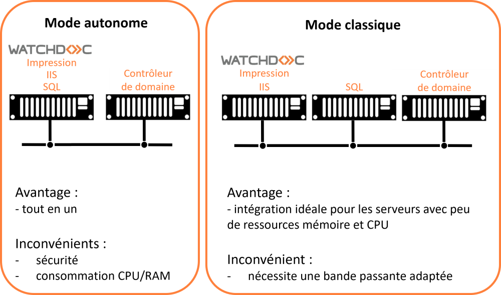
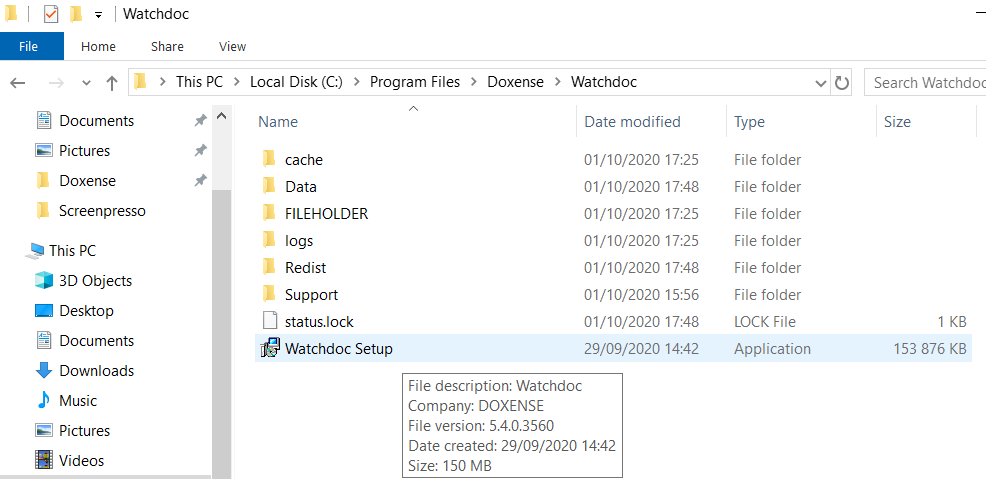
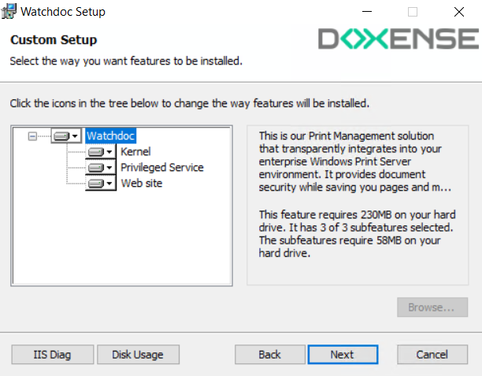
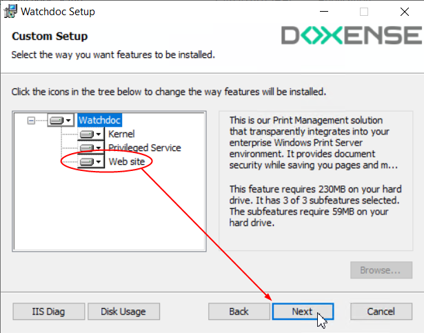
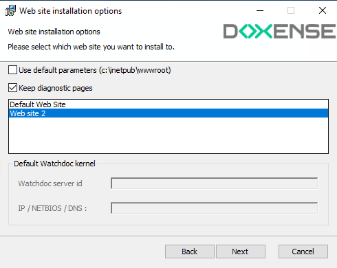
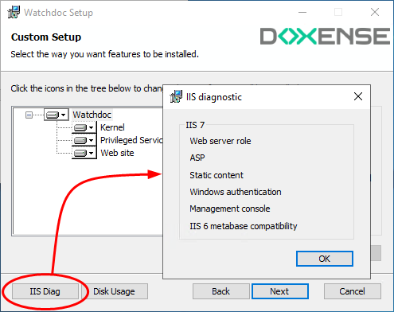
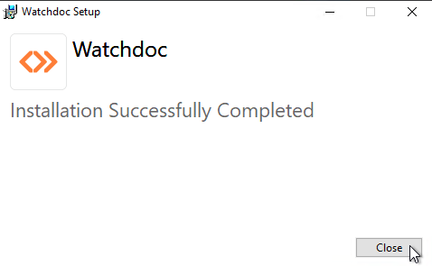

En mode autonome ou mode classique, les composants kernel  En anglais, Kernel signifie "noyau". Dans nos documents, il désigne le service de Watchdoc chargé de la gestion des impressions hors Site web. et site web (IIS) de Watchdoc sont installés sur le même serveur :
En anglais, Kernel signifie "noyau". Dans nos documents, il désigne le service de Watchdoc chargé de la gestion des impressions hors Site web. et site web (IIS) de Watchdoc sont installés sur le même serveur :
Cliquez sur l'image pour l'agrandir
{kind=link}
L'installation de Watchdoc comporte les étapes suivantes :
-
vérification des prérequis ;
-
décompression de l'archive ;
-
installation de Watchdoc (incluant l'installation des composants kernel et Site web (IIS)).
Vérifier les prérequis
Avant de procéder à l'installation de Watchdoc, il convient de vérifier que les prérequis nécessaires sont respectés :
-
le rôle Serveur Web est installé ;
-
le rôle Services de documents et d'impression est installé ;
-
Microsoft® .NET Framework 4.7.2 est installé ;
-
le gestionnaire de base de données est installé ;
-
un compte de service (doté d'un mot de passe qui n'expire pas) est disponible pour activer WEScan.
Décompresser l'archive
L'outil d'installation est enregistré dans un dossier d'archive nommé Watchdoc[…].zip. Il doit être décompressé dans un dossier du serveur.
Dans l'arborescence du serveur, créez un dossier dans lequel seront décompressés les fichiers d'installation Watchdoc.
Vérifiez que l’archive zip n’est pas bloquée :
-
cliquez droit sur le fichier de l’archive > Propriétés ;
-
dans la section Sécurité, cochez la case Débloquer si elle n'est pas cochée.
-
cliquez sur OK pour débloquer l'archive ou fermez la fenêtre si l'archive n'est pas bloquée :

-
Décompressez l'archive Watchdoc[...].zip dans le dossier créé à cet effet.
Lancer l'installation de Watchdoc
Dans le dossier d'archive décompressé Watchdoc Setup :
-
double-cliquez sur le fichier Watchdoc Setup.exe :

-
Acceptez les conditions de licence après en avoir pris connaissance, puis cliquez sur Install :

-
Les étapes de l'installation s'affichent dans la fenêtre Setup Progress.
-
Cliquez sur Next pour poursuivre l'installation :

En mode autonome ou classique, les composants kernel, Privileged Service et IIS (Web site) de Watchdoc devant être installés sur le même serveur, ils apparaissent dans la liste des composants et sont sélectionnés par défaut :

-
dans la liste des composants, : sélectionnez Web site pour vérifier la configuration du site Web (IIS) par défaut :

-
l'interface Options du Web site (Web site installation options) s'affiche.
-
La case Use default parameters cochée permet d'utiliser le site web par défaut (appelé Default web site) et le dossier c:\inetpub\wwwroot pour y stocker les fichiers propres à Watchdoc. Dans ce cas, la valeur Default Web Site est sélectionnée par défaut.
Si vous souhaitez utiliser un autre site web configuré sur votre serveur, décochez la case et précisez le site web à utiliser :
-
La case à cocher Keep diagnostic pages (présente depuis Watchdoc v6.1.0.4926) permet de conserver ou non le mode "debug". Ce mode permet d'afficher des outils de diagnostic afin d'aider à l'analyse en cas de dysfonctionnement de Watchdoc (cf. Activer le mode debug).
-
cliquez sur le bouton Next pour poursuivre l'installation.
N.B. : Si le composant WebSite est manquant dans la liste, cela signifie que le rôle serveur Web IIS a été mal paramétré. Dans ce cas, cliquez sur le bouton IIS Diag de l'interface Custom Setup pour afficher la liste des composants ISS installés.
Dans le cas où un composant s'affiche en gris, c'est qu'il est manquant. Il convient alors de corriger le problème (dans le gestionnaire de serveurs) avant de relancer l'installation du site web Watchdoc.

Configurer le kernel Watchdoc
Dans la fenêtre Kernel options qui s'affiche :
-
dans la section Language, choisissez la langue par défaut des interfaces (d'administration et d'utilisation) ;
-
pour le paramètre Maintenance password la section Password, modifiez, au besoin, le mot de passe d'administration dont la valeur est changeme par défaut ;
-
cochez la case Create Watchdoc Service pour laisser le programmer installer Watchdoc® avec les options par défaut. Dans le cas d'une installation en mode cluster, décochez la case.
-
cochez la case Restart Spooler service during installation pour permettre un arrêt puis un redémarrage automatique du service spooler au cours de l'installation. Cette case peut-être décochée si vous souhaitez maîtriser manuellement le redémarrage du service spooler ;

-
Cliquez sur Next pour poursuivre l'installation.
Configurer Privilege Service options
Le composant Privileged Service est associé à l'utilisation de la destination "ScanToFolder" de WEScan. Pour être activée, cette destination nécessite en effet de disposer d'un compte de service (dont le mot de passe n'expire jamais) disposant du droit de lecture et d'écriture sur un dossier en partage réseau. WEScan peut ainsi envoyer les documents numérisés dans ce dossier en partage réseau. L'utilisateur pourra ensuite y récupérer ses documents numérisés.
Dans la fenêtre Privileged Service options qui s'affiche :
-
cochez la case Automatically enable the service with these credentials pour activer WEScan et lui permettre d'utiliser la destination "ScanToFolder" (enregistrement des documents numérisés dans un dossier en partage réseau).
Le compte doit avoir la propriété "Compte de service" et le mot de passe du compte de service ne doit jamais expirer.Si la case est décochée, WEScan pourra être activé, mais sans la destination "ScanToFolder".
-
dans la section Specify the account, indiquez :
-
Account : saisissez un compte de service disposant du droit d'écriture dans le dossier en partage réseau ;
-
Password : saisissez le mot de passe de ce compte de service :
-
-
Cliquez sur Next pour poursuivre l'installation.
-
Dans la fenêtre Ready to install Watchdoc, cliquez sur Install.
-
Finaliser l'installation automatique de Watchdoc :



-
L'assistant affiche un message informant de la fin de l'installation.
-
Cliquez sur Finish pour quitter l'assistant.
è La fenêtre Installing Watchdoc affiche la progression de l'installation, puis un message informant de la réussite de l'installation.
L'installation terminée, un raccourci Watchdoc s'affiche sur le bureau de votre espace de travail .
Cliquez dessus pour accéder à l'interface de configuration de Watchdoc.
Procédez à la configuration initiale de Watchdoc (cf. Accéder à l'interface de configuration).